地政学
リスボンはテージョ川河口にある大西洋の首都で、欧州、アフリカ、ブラジルを結ぶ記憶と外交を抱えます。議会、省庁、大統領府、港、空港が近く、海洋国家の歴史と現代の欧州政策が同じ街路に重なる重要な拠点です。

🇵🇹 ポルトガル / ヨーロッパ / World City Atlas
テージョ川の河口に広がる大西洋の首都です。海洋史、港湾、観光、ファド、ルゾフォニア移民、丘の交通、住宅の緊張、地震の記憶が重なる都市です。
都市の骨格
リスボンはテージョ川の広い河口を港と景観に変え、丘の上の地区、下町の格子街路、郊外鉄道、橋、空港を結びます。大西洋へ向かう位置が、政治、交易、観光、移民の回路を同時に作ります。
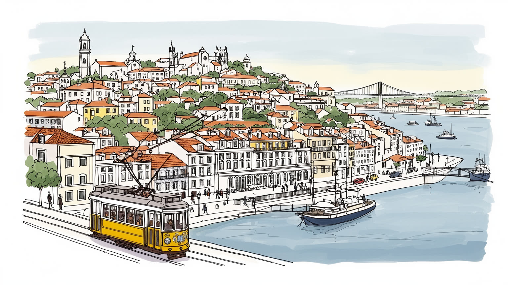
リスボンはテージョ川河口にある大西洋の首都で、欧州、アフリカ、ブラジルを結ぶ記憶と外交を抱えます。議会、省庁、大統領府、港、空港が近く、海洋国家の歴史と現代の欧州政策が同じ街路に重なる重要な拠点です。
観光、港湾、金融、行政、大学、IT、創業支援が雇用を生む一方、ホテル、清掃、飲食、介護、配送、建設の労働が都市を支えます。短期滞在経済の成長は収入を増やしつつ、家賃と不安定雇用を押し上げる論点も多く残ります。
カトリックの祭礼、ファド、アズレージョ、海洋史の記念碑、ブラジルやアフリカ系住民の教会と食文化が混じります。信仰は大聖堂だけでなく、地区の行列、家族の墓参り、移民の祈りとして日常を静かに区切ります。
ベレン、アルファマ、展望台、路面電車、川沿いの散歩は魅力ですが、住民には坂道、古い住宅、観光混雑、短期賃貸、家賃上昇が重なります。都市の美しさは、住み続ける条件を守れるかと切り離せない日々の論点です。
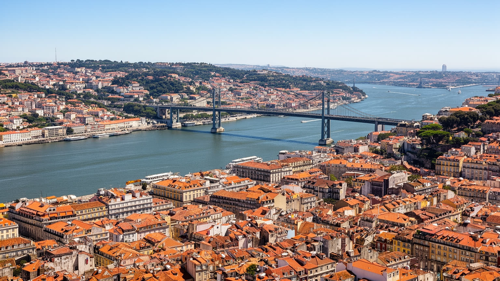
リスボンの地形は、テージョ川の広い河口と急な丘によって決まります。川は単なる眺望ではなく、港、造船、税関、軍事、交易、郊外通勤を結んできた都市の背骨です。下町のバイシャは一七五五年の大地震後に格子状へ再編され、丘の上にはアルファマ、グラサ、バイロ・アルト、シアードのような地区が残ります。坂道は観光の絵になりますが、住民にとっては買い物、通学、高齢者の外出、消防、配送を難しくする生活条件でもあります。橋とフェリー、郊外鉄道、地下鉄、路面電車、ケーブルカーは、川と高低差に分断されやすい都市を毎日つなぎ直します。朝の川沿いではジョギングする人が海風を受け、夕暮れには坂の石畳が橙色に光ります。都市を読むには展望台からの美しさだけでなく、谷筋の道路、駅前の乗り換え、川南岸から通う人の時間まで見る必要があります。丘の斜面では眺望の良い住宅ほど価格が上がり、低地では地下水、排水、地震時の揺れ、観光客の流れが街区の使い方を左右します。川沿いの再開発は歩きやすい公共空間を生みますが、港湾や倉庫の機能をどこへ置くかという判断も迫ります。丘と川は、景観、交通、住宅価格、災害リスクを一体で形づくる都市の基盤です。朝夕の通勤や買い物の経路にも、この地形は細かく現れ、坂の途中の広場、階段、停留所が近隣の小さな結節点になります。
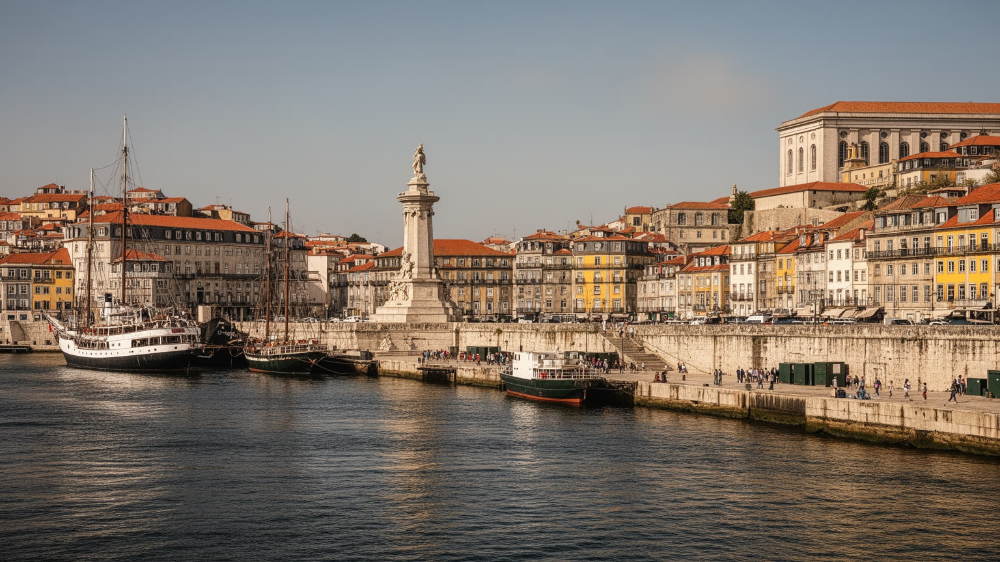
リスボンは大航海時代の栄光を都市ブランドとして抱えますが、その歴史は冒険の物語だけではありません。ベレンの修道院や塔、発見をたたえる記念碑は、ポルトガルが大西洋、アフリカ、インド洋、ブラジルへ広がった時代を示す一方、交易、植民地支配、奴隷制、宣教、暴力の記憶も伴います。海洋史は観光資源であると同時に、現在の移民、言語、宗教、食、外交の背景です。旧帝国圏から来た人びとは、労働者、学生、音楽家、店主、家族としてリスボンを作り直してきました。博物館や記念碑が何を称え、何を語りにくくしているかを見ると、都市の公共記憶が見えてきます。学校教育、展示の言葉、通りの名前、記念日の式典は、過去をただ保存するのではなく、現在の住民がどの歴史を共有するかを決める場になります。海へ開いた首都という誇りを保つには、世界をつないだ力と、そこに含まれた不平等を同時に読む必要があります。川辺の観光施設が華やかになるほど、植民地支配で傷ついた側の記憶や、旧植民地から来た住民の声をどう扱うかが問われます。リスボンの美しい川辺は、過去の船出だけでなく、その船出が残した責任を現在へ返す場所でもあります。近年は黒人住民や研究者、芸術家が記念碑の読み替えを求め、沈黙してきた経験を公共空間へ戻そうとしています。議論は大学や劇場、地域の集会にも今も広く広がります。
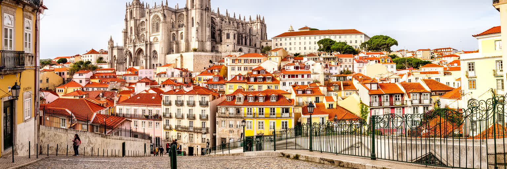
リスボン観光の魅力は、ベレンの遺産、アルファマの路地、シアードの劇場、バイロ・アルトの夜、川沿いの広場、展望台からの眺めを短い距離で体験できる点にあります。アズレージョの壁、黄色い路面電車、石畳、洗濯物、ファドの店は、訪問者に濃い都市像を与えます。缶詰店や土産物の路面店、買い物客で混む商店街も、観光と日常が重なる場所です。しかし名所と生活の距離が近いほど、成功は住民の負担にもなります。短期賃貸、飲食店の増加、土産物化、騒音、混雑、歩道の占有は、古い地区の暮らしを変えます。観光業は雇用を作り、建物の修復も促しますが、案内、清掃、配膳、宿泊、路上販売などの仕事には低賃金や季節性も多いです。観光客が見る懐かしい街並みは、住民にとっては家賃更新や買い物先の消失として経験されることがあります。クルーズ船や格安航空が人の流れを増やすほど、交通整理、警備、夜の騒音対応の現場にも負荷がかかります。写真に残る路地の美しさは、毎朝のごみ収集、石畳の補修、住民の我慢によって保たれています。リスボンの遺産を守るとは、石造りの外観を保存するだけでなく、学校、食料品店、病院、近所づきあいが残る生活環境を保つことでもあります。混雑を分散する交通案内、宿泊規制、住民向け店舗の維持は、遺産を観光商品だけにしないための実務です。
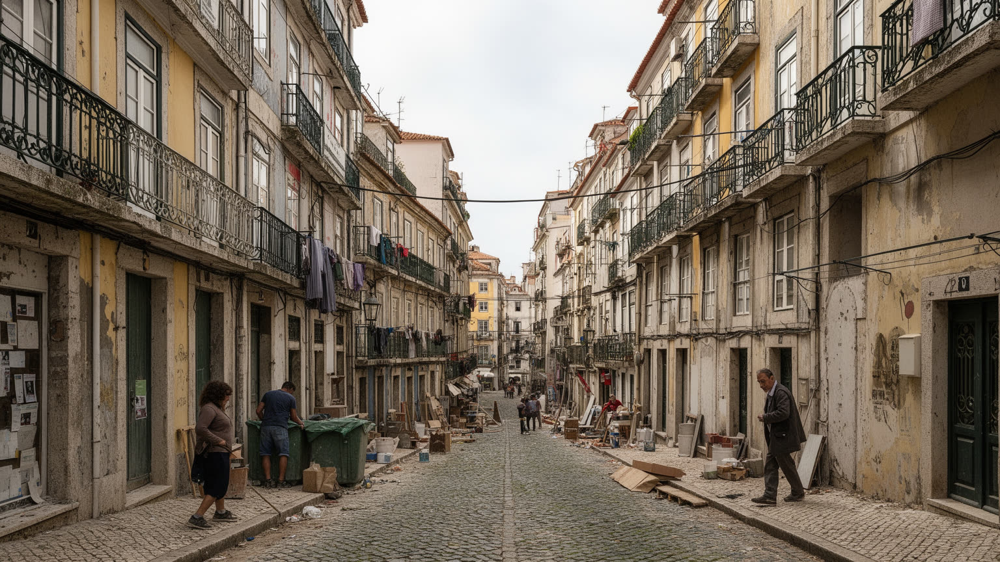
リスボンの住宅問題は、観光の増加、海外投資、短期賃貸、古い建物の改修、若い専門職の流入が同時に進んだ結果として鋭くなりました。中心部の空き家や老朽住宅が更新されること自体は必要ですが、改修後の家賃が上がりすぎれば、長く住んだ高齢者、低所得世帯、学生、移民労働者は地区を離れざるを得ません。大学に通う若者や子どものいる世帯が中心部に住みにくくなれば、街の時間は観光客と短期滞在者へ偏ります。街の魅力を作ってきた小さな商店、食堂、修理屋、近所の関係も、家賃と客層の変化で薄くなります。丘の上の眺望や古いタイルは市場価値を持ちますが、住民にとって住宅は投資商品ではなく生活の足場です。郊外へ移れば費用は抑えられる場合もありますが、通勤時間、交通費、保育、医療へのアクセスが重くなります。若い世代が親元を離れにくくなり、移民世帯が過密な部屋を選ばされれば、都市の活力は中心の華やかさとは別の場所で削られます。改修された建物が増えても、近所の支え合いが失われれば地区の記憶は続きません。住宅政策、賃貸規制、公共住宅、短期賃貸の管理、空き家活用は、観光都市としての成功を生活都市として成立させる条件です。家主、入居者、自治体、観光事業者の利害を調整する場が弱ければ、更新の利益は一部に偏りやすいです。その調整こそ、暮らす権利を守る自治の論点です。
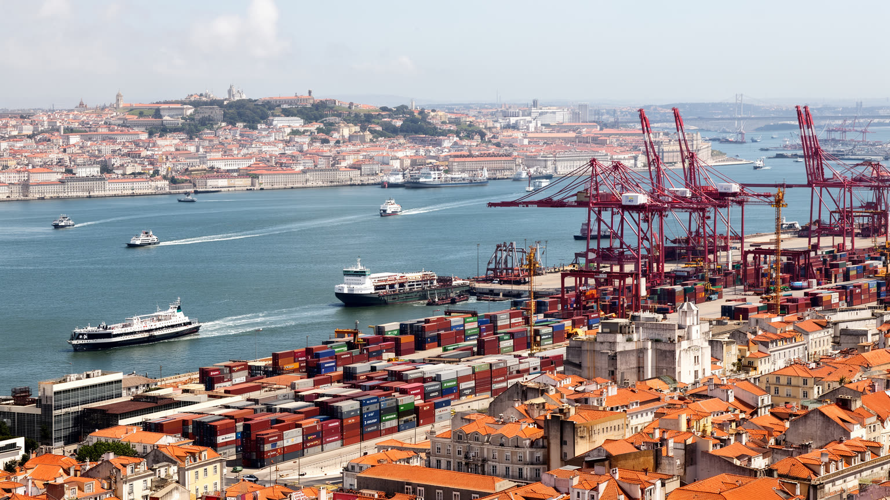
リスボンは観光都市として語られやすい一方、テージョ川沿いの港湾と物流は今も都市を支える重要な基盤です。コンテナ、燃料、建材、フェリー、クルーズ船、倉庫、税関、鉄道接続、道路輸送は、首都圏の消費と産業を背後から動かします。港は古い交易の記憶を残すだけでなく、現在の雇用、環境負荷、土地利用、再開発をめぐる政治の場所でもあります。川沿いの倉庫や工業地が文化施設、住宅、オフィス、遊歩道へ変わると、都市は水辺を市民と観光客へ開きます。一方で、物流機能が見えにくくなり、港で働く人や周辺の騒音、排気、交通の問題は忘れられがちです。クルーズ観光は収入をもたらしますが、短時間滞在の混雑や排出、中心部への圧力も生みます。物流の効率化は都市の便利さを高めますが、トラックの動線、倉庫用地、港湾労働の安全、河口の水質管理を軽視すると、負担は周辺地区へ集中します。港湾都市としてのリスボンを読むには、美しい川面と同時に、荷役、通関、倉庫、橋の渋滞、川南岸の通勤を見なければなりません。港は過去の象徴ではなく、都市の日常を運び続ける現場であり、観光と生活の両方を支える基盤です。港湾施設の移転や縮小を決める時にも、景観の改善だけでなく、雇用、災害時の物資輸送、地域産業の接続を合わせて評価する必要があります。平時の効率と非常時の備えを分けずに考える必要があります。
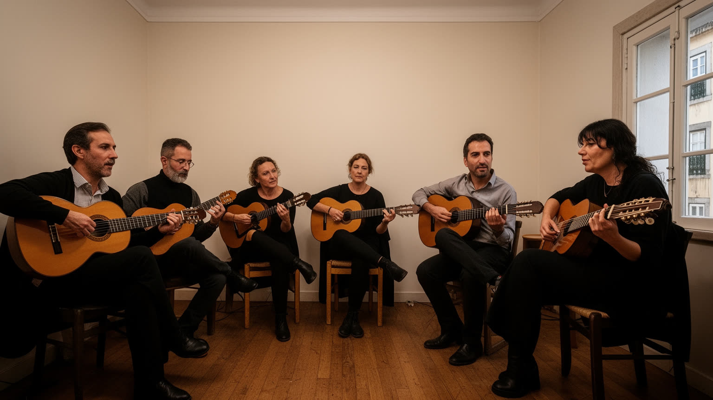
ファドはリスボン文化の象徴ですが、観光客向けの舞台だけで理解するには狭すぎます。アルファマやモウラリアの路地、港で働く人、移民、貧困、恋愛、別れ、海への感情が、歌の声とギターに折り込まれてきました。サウダーデと呼ばれる喪失や憧れの感覚は、都市が経験した出発、帰郷、貧しさ、家族の距離を表す言葉でもあります。ファドの店は夜の観光収入を得る一方、家賃上昇や客層の変化にさらされ、地元の小さな場が残るかどうかが文化の持続を左右します。六月のSanto Antonio祭では、路地に飾りが下がり、イワシの匂いと音楽が夜を満たします。文化は無形遺産として登録されると保護されますが、同時に商品化も進みます。歌手、演奏家、音響、厨房、案内係、深夜交通、近所の静けさまで含めて、夜の文化は成り立ちます。さらにリスボンの音楽はファドだけで完結せず、カーボベルデ系のリズム、ブラジルの音、電子音楽、地区の祭礼が混ざり、若い世代の表現を広げています。新聞、ラジオ、テレビ、ネットメディアは、祭礼や住宅問題、移民の声を都市の議論へ運びます。古い歌の形式を守ることと、新しい住民の声を入れることは対立ではなく、都市文化を生かすための両輪です。リスボンの文化を読むには、有名な歌だけでなく、誰が歌う場を持ち、誰が聴き、誰がその周辺で働くのかを見る必要があります。ファドは古い感傷ではなく、都市が変わる中で記憶をつなぎ直す実践です。
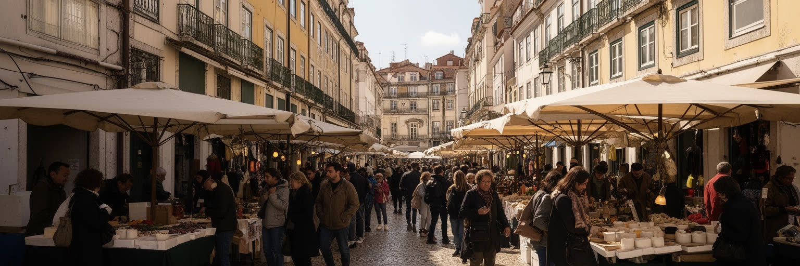
リスボンの国際性は、英語圏の観光や欧州内の移住だけでなく、ブラジル、アンゴラ、カーボベルデ、ギニアビサウ、モザンビーク、サントメ・プリンシペ、東ティモールなどポルトガル語圏との関係に深く支えられています。共通言語は移動を助けますが、同じ言葉を話せることが差別、資格、住宅、労働条件の壁を消すわけではありません。移民は建設、介護、清掃、飲食、配達、ホテル、音楽、教育、医療を支え、郊外や中心部の商店、教会、食堂、送金窓口、理髪店に生活の網を作ります。大学に集まる留学生や研究者も、ポルトガル語圏と欧州を結ぶ知の回路を太くします。ブラジルの新しい若者文化、アフリカ系住民の音楽と祭礼、カトリックや福音派の教会、イスラム教徒の祈りは、首都の日常を多層にします。学校での言語支援、資格の承認、住居探し、医療窓口、警察への信頼は、移民が都市に参加できるかを左右する具体的な条件です。植民地史の記憶は、現在の多文化性を美しい言葉だけで語れない理由でもあります。リスボンを読むには、誰が歓迎され、誰が低賃金の仕事へ押し込まれ、誰の歴史が学校や博物館で語られるのかを見る必要があります。移民二世が学校、音楽、スポーツ、政治で発言を増やすほど、首都の自己像も欧州だけで閉じないものへ変わっていきます。その変化を教育と政策が受け止める必要があります。
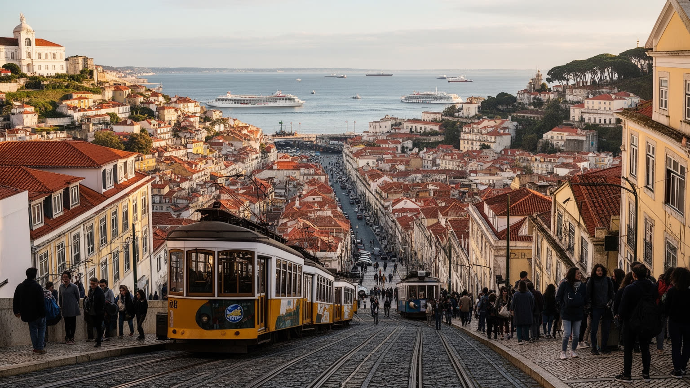
リスボンの交通は、地下鉄や郊外鉄道だけでなく、坂を越える路面電車、ケーブルカー、エレベーター、バス、徒歩の組み合わせで成り立ちます。観光客には二八番電車の車窓が魅力ですが、住民には通勤、通院、通学、買い物を支える実用交通です。丘の多い街では、数百メートルの距離でも高低差が生活の壁になり、高齢者や障害者、子ども連れ、配送員に影響します。朝は川沿いを走る人が多く、坂道を上るだけでも運動になる街です。地下鉄は空港や中心部を結び、郊外鉄道はシントラ、カスカイス、川南岸から人を運びますが、住宅費の上昇で遠くに住む人ほど移動時間に縛られます。車の混雑、駐車、観光バス、配車サービス、歩行者の安全は、古い街路では特に調整が難しいです。川を渡る橋やフェリーの混雑は、南岸に暮らす人の一日を左右し、中心部の仕事と郊外の住宅価格を結びつけます。石畳を鳴らすトラム、海風、夕暮れの坂は魅力ですが、混みすぎれば住民の移動が遅れます。交通を読むことは、どの地区が便利で、どの住民が坂や乗り換えに苦しむかを見ることです。リスボンの起伏は、同時に都市の公平性を試す条件でもあります。小さな交通手段を残し、バリアフリーを進めることが、丘の都市を生活の場所に保ちます。停留所の位置、運賃、終電、歩道の幅のような細部が、観光の快適さだけでなく住民の時間の使い方を決めています。
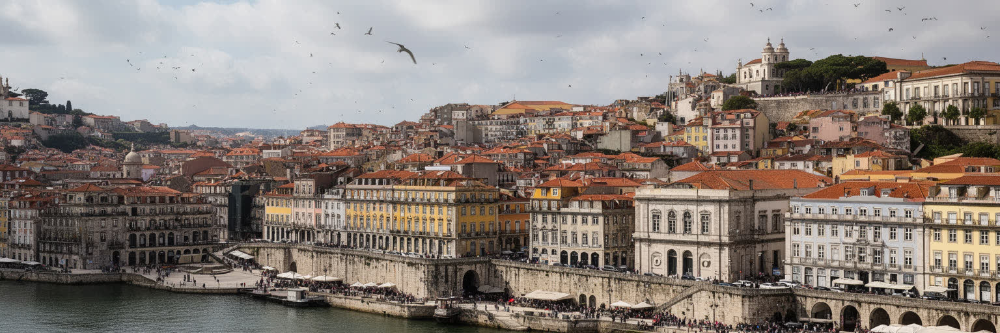
リスボンの気候は、乾いた夏、雨の多い冬、海風、強い日差しによって暮らしのリズムを作ります。大西洋の風は暑さを和らげますが、熱波が長くなるほど、古い住宅の断熱、日陰の不足、高齢者の孤立、屋外労働、観光客の安全が論点になります。水不足や山火事は都市中心だけの問題ではなく、首都圏の公園、郊外、農地、電力、観光にも関わります。さらにリスボンには一七五五年の大地震と津波、火災の記憶があります。バイシャの格子街路や建築技術は、その災害後の復興と統治の思想を今に残します。地震リスクは過去の物語ではなく、古い建物の耐震、避難路、港湾、防災教育、観光客への情報提供に関わる現在の論点です。坂の多い古い地区では、救急車や消防車の進入、石造建物の補強、避難場所への移動も簡単ではありません。猛暑時に涼める公共施設、街路樹、日陰のある停留所、多言語の災害情報は、観光都市であるほど重要になります。美しい石造りの街は、気候と災害に強いとは限りません。リスボンを読むには、晴れた展望台の眺めと同時に、熱、雨、地震、津波へ備える制度を見なければなりません。気候適応と防災は、都市の魅力を守るための公共投資です。港湾、地下鉄、古い住宅、観光地区を同時に点検することで、災害時にも首都機能と日常生活を止めにくくできます。訓練と改修を重ねる公共の姿勢が問われています。
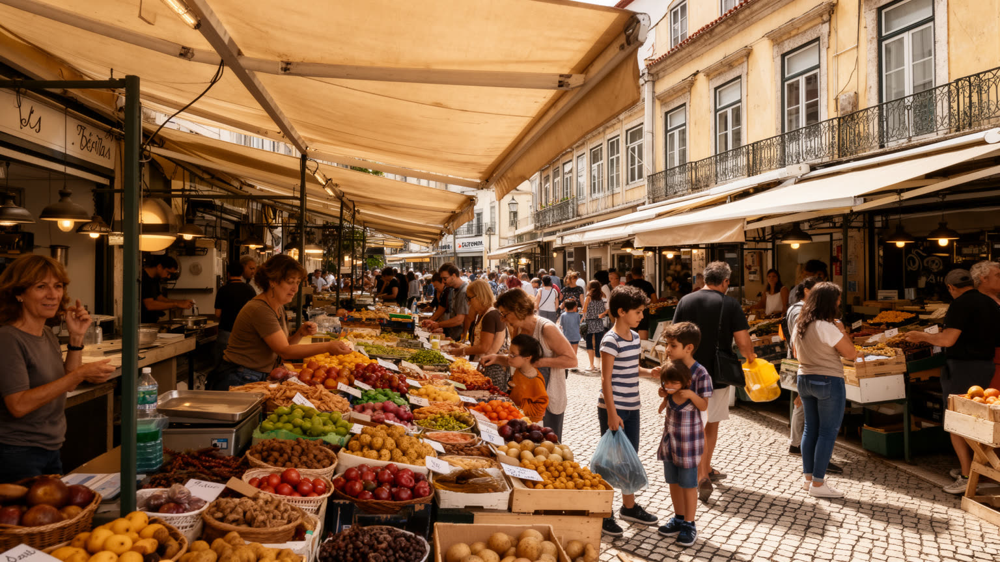
リスボンの日常は、展望台や記念碑だけでなく、市場、カフェ、菓子店、食堂、フェリー乗り場、学校帰りの坂道にあります。バカリャウ、イワシ、魚介の煮込み、パステル・デ・ナタ、エスプレッソ、ワインは観光客にも知られますが、食はまず住民の時間を整える装置です。朝のカフェ、昼の定食、夕方の買い物、週末の家族の食事は、働く時間、宗教行事、季節、移民の味と結びつきます。市場の再開発は新しい客を呼びますが、地元向けの価格や店舗が失われれば生活の場所は観光施設へ変わります。缶詰のイワシやツナを並べる店は買い物の楽しさを作る一方、装飾化された売り場は日用品の店を押し出すこともあります。飲食業は多くの雇用を生む一方、低賃金、長時間労働、季節需要、家賃上昇に左右されます。魚市場、パン屋、菓子店、近所の小さな食堂は、高級レストランよりも住民の生活を正確に映します。移民の料理が増えることで、街の味は旧来のポルトガル料理に閉じず、言語圏や大西洋の関係を日常の皿に変えます。リスボンの食文化を読むには、名物を味わうだけでなく、誰が魚を運び、皿を洗い、早朝に店を開け、深夜に片づけるのかを見る必要があります。都市の豊かさは、高級化した店だけでなく、普通の住民が日々使える食の場所を残せるかで測られます。近所の店で顔を合わせる習慣は、孤立を防ぎ地区の安心感を支えます。
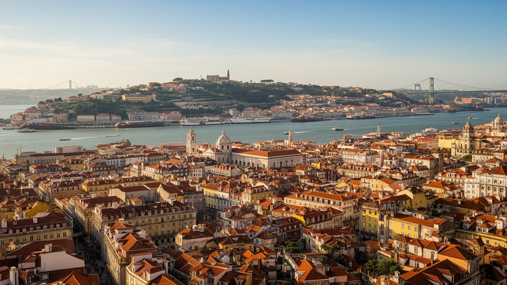
リスボンを読むことは、明るい川辺と古い坂道の美しさを、海洋史、植民地の記憶、移民、住宅、観光労働、港湾、防災の現実と重ねることです。首都としての政治機能は、ポルトガル国内を束ねるだけでなく、欧州連合、ブラジル、アフリカのポルトガル語圏との関係を街に引き込みます。BenficaとSportingの試合日は、家族、学生、高齢者、移民の若者が別々の地区から同じ熱を共有します。観光と創業支援は都市へ新しい資本と人を呼びますが、家賃上昇や短期賃貸は暮らしの足場を揺らします。ファドやアズレージョは記憶を伝えますが、文化を支える人が住めなければ舞台は薄くなります。港は歴史の象徴であると同時に、現在の物流と環境負荷の現場です。坂道の交通、古い住宅、熱波、地震への備えは、都市のロマンを日々の制度へ引き戻します。リスボンの強さは、巨大な経済規模よりも、海へ開いた小さな首都が複数の世界を結ぶ密度にあります。その価値を守るには、訪れる人の満足だけでなく、住民の住宅、移動、仕事、祈り、食、暑さへの備えを同じ地図で見る必要があります。川と丘の景観は、都市の課題を隠す幕ではなく、歴史と生活を読み解く入口です。美しさを消費するだけでなく、その美しさを支える労働と居住条件を読むことが、リスボンを世界都市として理解する近道になります。